「風格即其人。」“Le style est l’homme même.” (Buffon, 1753)
「文體計量學」一詞來自盧托斯瓦夫斯基（1897）The word “stylometry” was coined by the Polish philosopher Wincenty Lutosławski in 1897.
CHI3242 文本挖掘 Text Mining for Chinese Humanities · ←→ navigate · 1–9 sections · F fullscreen
「style」這個詞從哪裡來？Where does the English word “style” come from?
羅馬蠟板與三支尖筆（複製品）· reproduction of a Roman wax tablet with three stili 尖端用來刻字，扁平的一端用來抹平、擦掉 · the point writes, the flat end erases
拉丁文 stilus： 在蠟板上刻字的尖筆Latin stilus: a pointed tool for writing on wax tablets
轉喻：從「用什麼寫」 到「怎麼寫」by metonymy: modus scribendi, the way of writing
最廣義：刻畫某人或 某物的特徵most generally: the features that characterize someone or something
Herrmann, van Dalen-Oskam & Schöch, “Revisiting Style, a Key Concept in Literary Studies”, Journal of Literary Theory 9.1 (2015), 29
那麼，中文的「風格」呢？And where does the Chinese word fengge come from?
風
風度、風範：一個人散發的氣質feng: bearing, manner, the “air” of a person
格
品格、格調：人的品質與格局ge: character, standard, quality
先品評人物 · first, people
李元禮風格秀整，高自標持
——南朝宋・劉義慶《世說新語・德行》
“Li Yuanli’s bearing was refined and upright, and he held himself to high standards.”
再評論文章 · then, writing
亦各有美，風格存焉
——南朝梁・劉勰《文心雕龍・議對》
“Each has its own beauty; their style is present in them.”
和 style 一樣：先指人，後指文——「風格即其人」Like “style”, the word moved from describing a person to describing a text.
六種常見的「風格」定義Six recurring definitions of style (Herrmann et al. 2015)
1
更高層次的藝術價值，靠審美經驗來把握
a higher-order artistic value, grasped through aesthetic experience
Staiger（瑞士文學學者）：「不可言說的同一」
文體計量
2
單一文本的整體完形
the holistic gestalt of a single text
Werkimmanenz：德國「作品內在」批評
文體計量
3
作者個性、主體性或情感的表達
an expression of the author’s individuality or emotion
Spitzer（奧地利語文學家）· 作者歸屬
文體計量
4
在近義的選項之間所做的選擇
a choice among (more or less synonymous) alternatives
Sanders、Sandig（德國語言學家）
文體計量
5
對某種規範的偏離（需要對照）
a deviation from some norm, which needs a contrast
Riffaterre（法裔美國文學理論家）
文體計量
6
任何可以用計算方式測量的文本屬性
any property of a text that can be measured computationally
Stamatatos（希臘電腦科學家）：近千種「文體標記」
文體計量
文體計量學主要建立在 ③ ④ ⑤ ⑥ 上：作者的習慣，表現為選擇，用數字來量，和語料對照Stylometry rests mainly on 3–6: an author’s habits, visible as choices, measured as numbers, compared against a corpus.
一個可以操作的定義An operational definition, unpacked term by term
風格是1文本的一種屬性，由2一組可以用4量化或質化方式觀察的3形式特徵所構成。“Style is a property of texts constituted by an ensemble of formal features which can be observed quantitatively or qualitatively.”
Herrmann, van Dalen-Oskam & Schöch 2015, 44 · 德國與荷蘭的文學、數位人文學者 · literary scholars and digital humanists in Germany and the Netherlands
下面四格：定義中的四個關鍵詞，逐一解釋 · below: the four key terms, one at a time
1文本texts
整部或片段；一篇或一批（同作者、文類、時代）；文學或非文學whole or partial, one text or a group, literary or not
2一組an ensemble
很多特徵的組合，不一定和諧統一many features together, not necessarily a harmonious whole
3形式特徵formal features
字、詞、句法、語義，甚至敘事視角；要明確定義characters, words, syntax, narrative perspective; explicitly defined
4量化或質化quantitatively or qualitatively
數頻率、做統計 ＋ 細讀；實際研究多半兩者並用counting plus close reading; usually both
作者訊號The authorial signal is mixed with many others
作者 author
文類 genre
時代 period
主題、情節 topic, plot
人物的聲音 characters’ voices
編者、抄手、譯者 editors, scribes, translators
我們只想要一條：作者we want only one of them: the author
其他的都是干擾 → 要靠特徵選取壓下去the rest is noise, to be suppressed by choosing features well
例：比較偵探小說和兒童小說， 可能測到的是文類compare a crime novel with a children’s book and you may be measuring genre
反過來也行：研究文類、時代、譯者時，它們就是訊號，作者反而是干擾 The same methods also compare genres, periods or translators: then those are the signal.
文體計量學簡史A short history of stylometry
1851
德摩根英國數學家、邏輯學家：能不能用平均詞長判斷保羅書信的作者？Augustus De Morgan, in a letter: could word length tell which New Testament letters (the Pauline epistles) Paul really wrote?
1887
門登霍爾美國物理學家：「寫作的特徵曲線」：每位作者的詞長分布T. C. Mendenhall, “The Characteristic Curves of Composition”, Science
1897
盧托斯瓦夫斯基波蘭哲學家：創造 stylometry 一詞；柏拉圖對話錄的年代Wincenty Lutosławski coins the word; the order of Plato’s dialogues
1964
莫斯特勒與華萊士美國統計學家：《聯邦黨人文集》，貝氏統計Frederick Mosteller & David Wallace: The Federalist Papers
2002
伯羅斯澳洲英國文學學者，研究奧斯汀：Delta，至今仍是基準方法John Burrows: Delta, still the baseline
2013
朱奧拉美國電腦科學家：Robert Galbraith 就是 J. K. RowlingPatrick Juola: “Robert Galbraith” is J. K. Rowling
保羅書信：《新約》中署名使徒保羅的書信，有幾封的作者至今仍有爭論 · Pauline epistles: New Testament letters in Paul’s name, some disputed
背景：柏拉圖的對話錄Background: Plato’s dialogues
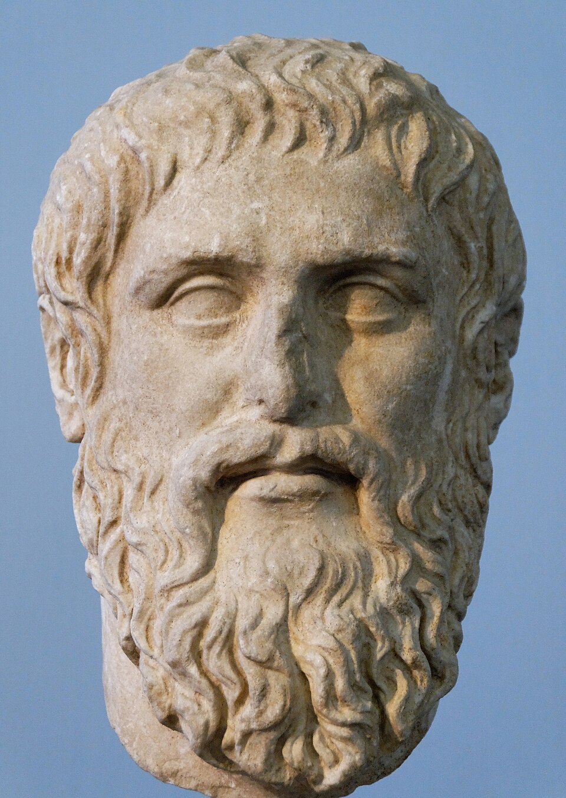
柏拉圖像（羅馬複製品） bust of Plato, Roman copy
柏拉圖（約前 427–前 347）：古希臘雅典的哲學家，蘇格拉底的學生Athenian philosopher, student of Socrates
留下三十多篇對話錄：寫得像劇本，主角通常是蘇格拉底some thirty-odd dialogues, written like plays, usually with Socrates as the main speaker
哪些先寫、哪些後寫？要理解他的思想怎麼發展，就得知道順序which came first? To trace how his thought developed, we need the order
古代的說法：《法律篇》是最後一部，他死時還寫在蠟板上Ancient tradition (Diogenes Laertius): the Laws came last, still on wax tablets when he died. A fixed point to start from.
盧托斯瓦夫斯基與柏拉圖Wincenty Lutosławski and the order of Plato’s dialogues
波蘭哲學家 Polish philosopher 1863–1954
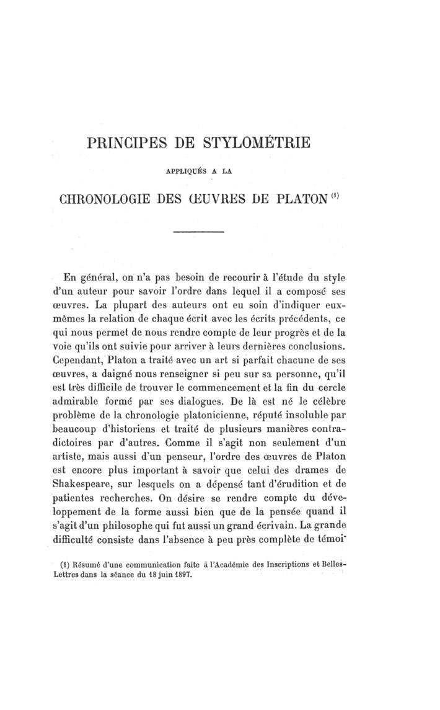
Revue des études grecques 11 (1898); see also The Origin and Growth of Plato’s Logic (1897)
問題：柏拉圖沒有告訴我們他寫作的順序Plato left almost no record of the order of his dialogues
假設：風格隨著年紀逐漸改變 → 數一數只在晚期作品常見的特徵style changes gradually; count features typical of the late works (the Laws is known to be last)
結果：《智者》《政治家》《斐萊布》《蒂邁歐》《克里提亞斯》和《法律篇》同屬晚期the Sophist, Statesman, Philebus, Timaeus and Critias join the Laws in the late group, building on Campbell (1867)
一開始就不只問「誰寫的」，還問「什麼時候寫的」From the start, not only “who wrote it?” but “when?”. Today’s paper looks for a break in time.
什麼是「特徵」？What is a feature? Anything about a text that we can count or measure
示意文字 · an invented passage in the style of a Qing novel
① 句子長度sentence length
② 功能字的頻率frequencies of function characters
③ 引語與問句direct speech and questions
④ 字元 n-gram（例：雙字）character n-grams, e.g. bigrams ending in 道
特徵表：每一欄是一個特徵A feature table: texts as rows, features as columns (numbers illustrative)
文本 text
平均句長avg. sentence length（字）
問句questions / 1,000
直接引語share of dialogue
「的」per 1,000
「了」per 1,000
魯迅《狂人日記》1918
12.4
6.1
8%
21
9
魯迅《孔乙己》1919
15.8
2.3
24%
27
12
老舍《駱駝祥子》第一章1936
17.2
1.4
11%
38
19
張愛玲《傾城之戀》1943
21.5
2.0
19%
45
14
沈從文《邊城》1934
14.9
1.6
17%
33
16
一欄 ＝ 一個特徵：每篇文本都量同一件事a column is one feature, measured the same way in every text
一列 ＝ 一篇文本的「檔案」：一串數字a row is one text’s profile: a list of numbers
「一串數字」在數學上叫做向量——等一下細談A list of numbers is what mathematicians call a vector.
為什麼常用「功能詞」？Why function words?
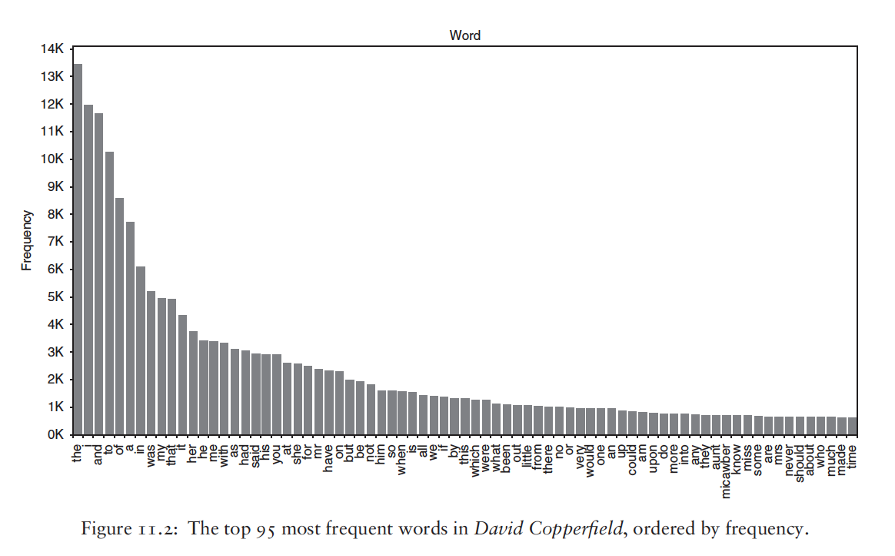
Dickens, David Copperfield: the 95 most frequent words · Algee-Hewitt et al., “Novel as Data”
最常見的詞幾乎都是功能詞： the, and, to, of, a, I…the most frequent words are almost all function words (Zipf’s law: a few words are very frequent, then a long tail)
① 出現很多次 → 統計穩定frequent, so the estimates are stable
② 和主題無關independent of topic
③ 作者不自覺地使用，很難模仿used unconsciously, hard to imitate
中文：的、了、也、着、便、之、乎、者…… 文言和白話的功能詞不一樣Chinese: classical and vernacular texts use different function words
中文的例子：35 個功能詞A Chinese example: 35 function words
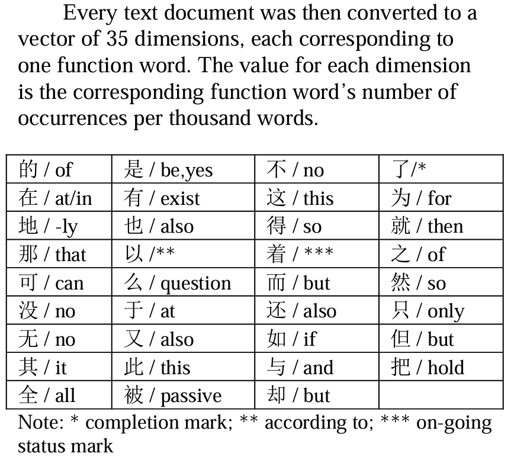
每篇文件 → 一個 35 維的向量every document becomes a vector with 35 dimensions
每一維 ＝ 一個功能詞 每千詞出現的次數each dimension: how often one function word occurs per thousand words
為什麼是「每千詞」 而不是「次數」？→ 第 4 節why per thousand words and not raw counts? See section 4.
Bei Yu, “Function Words for Chinese Authorship Attribution” (2012)
什麼是向量？What is a vector? First, pure geometry
向量 ＝ 一串有順序的數字：\(\mathbf{u} = (3,\ 1)\)an ordered list of numbers; (3, 1) is not (1, 3)
也是一支箭頭：從原點出發， 往右 3、往上 1also an arrow from the origin: 3 to the right, 1 up
另一個向量 \(\mathbf{v} = (1,\ 2)\)： 方向和長度都不同another vector, with a different direction and length
長度（畢氏定理）： \(\|\mathbf{u}\| = \sqrt{3^2 + 1^2} \approx 3.16\)the length, by Pythagoras; ‖·‖ comes back in the SVM section
同樣：\(\|\mathbf{v}\| = \sqrt{1^2 + 2^2} = \sqrt{5} \approx 2.24\)the same for v: u is longer than v
從文本到向量From texts to vectors
文件
「的」
「了」
「也」
每千字 · per 1,000 characters (示意 illustrative)
每一行 ＝ 一個向量each row is a vector: a list of numbers
三個數字 → 三維；100 個詞 → 100 維a hundred dimensions cannot be drawn, but the rules are the same
箭頭方向相近 ＝ 用字習慣相近Arrows pointing the same way: similar habits.
特徵選取：要用幾個詞？Feature selection: how many words, and which?
↑↓ 改變 N · 最常見的 30 個詞 （示意 illustrative）
① 最常見的 N 個詞（MFW）： N ＝ 100？500？1000？the N most frequent words; N is our choice
② 只留功能詞： Hu 等：前 500 字 → 144 個功能字keep only function words
③ 剔除人名、地名、 只在少數文本出現的詞“culling”: drop names and words found in only a few texts
④ 讓模型自己挑（SVM-RFE，第 7 節）let the model choose
太少 → 訊號不夠；太多 → 雜訊（主題、人名）混進來Too few features: not enough signal. Too many: noise from topics and names creeps in.
兩個向量有多遠？三種距離How far apart are two vectors? Three distances
🚕
計程車不能穿牆 只能沿著棋盤狀的街道開 a taxi in Manhattan can only follow the street grid
一個詞一個詞比：差了多少？ ＝ 曼哈頓距離 ÷ nword by word: how big is the gap? (the average gap)
Cosine DeltaSmith & Aldridge (2011); Evert et al. (2017)
\(1 - \cos\theta(\mathbf{z}_A, \mathbf{z}_B)\)
整串 z 分數當成一支箭頭： 兩支箭頭是否指向同一個方向？treat the whole z-score profile as an arrow: do the two arrows point the same way?
z 分數
的
了
呢
文件 A
+1
−1
+2
文件 B
+2
−2
+4
習慣一樣，B 只是更「誇張」： Δ = 1.33，Cosine Delta = 0same habits, B is just more extreme: Delta sees a gap, Cosine Delta sees none
最近的候選作者 ＝ 最可能的作者；Cosine Delta 通常更準（餘弦：word2vec 那週細談）The nearest candidate is the most likely author. Cosine Delta is usually more accurate; more on cosine in the word2vec week.
每一步去掉了什麼？What does each step remove?
步驟 step
去掉了 removes
結果 result
正規化relative frequency
文本的長度the length of the document
長短文本可以比long and short texts become comparable
標準化z-score
每個詞自己的平均和波動each word’s own base rate and spread
每個詞投同樣的一票every word gets an equal vote
餘弦距離cosine
向量的長度（整體強度）the length of the vector (overall intensity)
只比較模式only the pattern is compared
z 分數是相對於語料的：μ 和 σ 從整批文件算出來；換一批文件，z 就跟著變z-scores are relative to the corpus: μ and σ come from all the documents together, so a different corpus gives different z-scores.
背景：《聯邦黨人文集》是什麼？Background: what are The Federalist Papers?
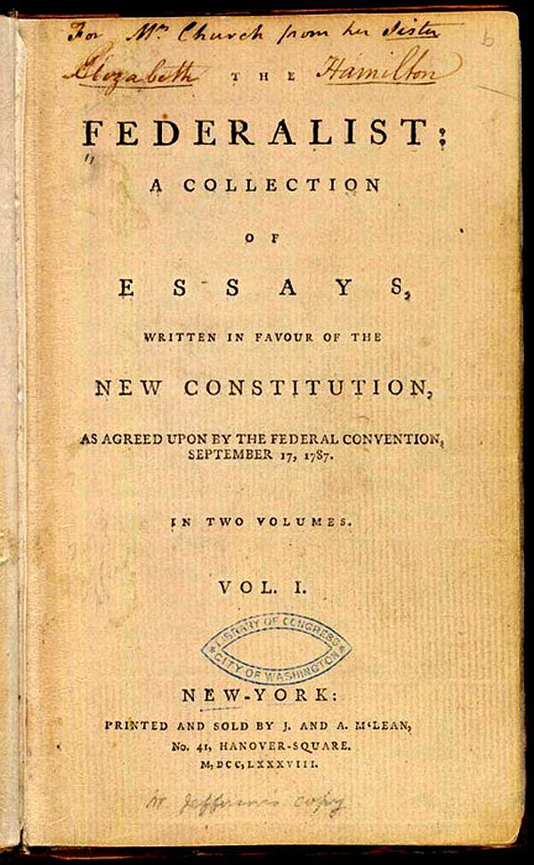
1788 年第一版書名頁 · first edition, 1788
1787 年，美國剛寫好憲法，要各州投票批准1787: the new US Constitution needs to be ratified by the states
紐約的報紙上連載 85 篇文章，勸讀者支持新憲法85 newspaper essays in New York argue for it
三位作者：漢密爾頓、麥迪遜、傑伊——共用一個筆名「Publius」Alexander Hamilton, James Madison and John Jay, all signing as “Publius”
後來漢密爾頓（決鬥身亡前）和麥迪遜各自留下名單：有 12 篇兩人都說是自己寫的later, Hamilton (before his fatal duel) and Madison each left lists: 12 essays are claimed by both
兩人的政治觀點、寫作題材都很接近 → 要靠不起眼的小詞來分辨Similar views and similar topics: only small, inconspicuous words can tell them apart.
《聯邦黨人文集》：「upon」The Federalist Papers (1787–88) and the word “upon”
12 篇有爭議：漢密爾頓還是麥迪遜？12 disputed essays: Hamilton or Madison?
Mosteller & Wallace（1964）： 功能詞 ＋ 貝氏統計Inference and Disputed Authorship: function words and Bayesian statistics
結論：12 篇都是麥迪遜寫的All twelve: Madison.
「upon」每千詞出現的次數“upon” per 1,000 words (approx.)
≈ 3
≈ 0.2
漢密爾頓 Hamilton
麥迪遜 Madison
還有 while（漢密爾頓）vs. whilst（麥迪遜）
《布穀鳥的呼喚》是誰寫的？The Cuckoo’s Calling (2013), by “Robert Galbraith”
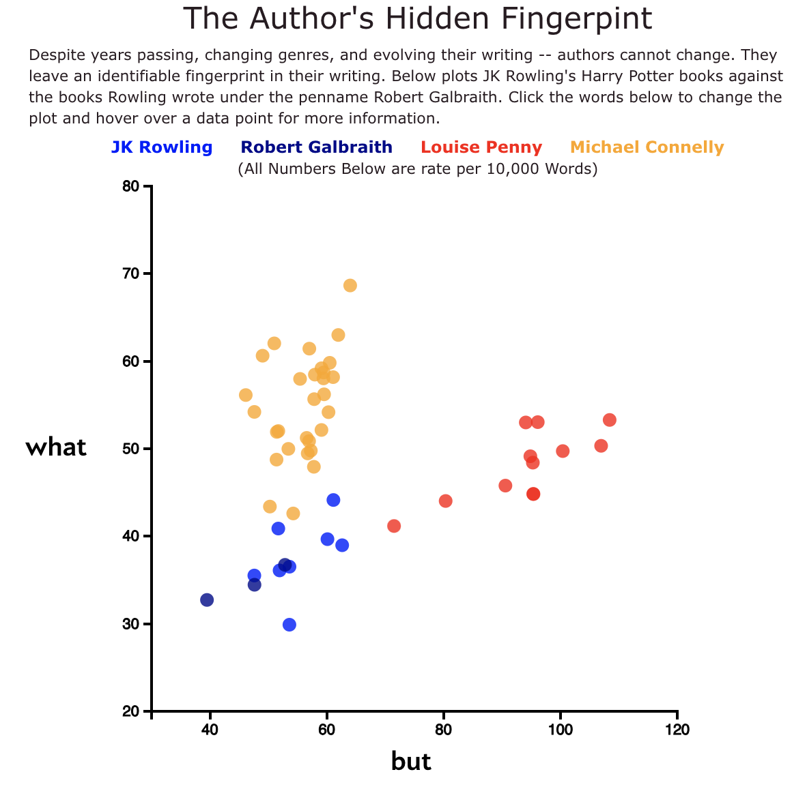
2013 年，「新人」Robert Galbraith 出版偵探小說；有人匿名爆料：是《哈利波特》的作者 J. K. Rowling？a “debut” crime novel; an anonymous tip says it is the author of Harry Potter
Patrick Juola（美國杜肯大學電腦科學家）的四項測試：詞長、最常見 100 詞、常見詞對、字元 4-gramword lengths, the 100 most frequent words, word pairs, character 4-grams: all point to Rowling
Rowling 隨後承認Rowling confirmed it
從《哈利波特》到偵探小說：文類變了，作者訊號還在The genre changed; the authorial signal survived. (Left: Ben Blatt, “what” vs. “but” per 10,000 words.)
奧斯汀自成一群；夏綠蒂、艾蜜莉彼此接近，安妮偏向一邊Austen stands apart; Charlotte and Emily are close; Anne drifts away
Eder, Rybicki & Kestemont, “Stylometry with R”, R Journal 8.1 (2016) · 常用工具 stylo 的作者 · makers of the R package stylo
希德嘉與她的秘書Hildegard of Bingen (c. 1098–1179) and her secretary
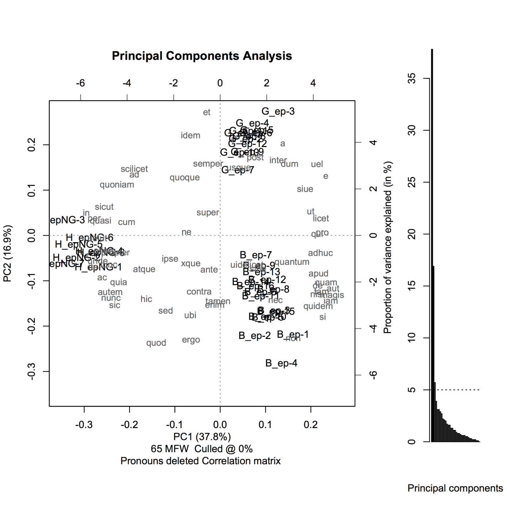
十二世紀的修道院院長、神秘主義者；晚年由秘書吉伯特協助寫作abbess and visionary; late in life she wrote with her secretary Guibert of Gembloux
書信的 PCA：G ＝ 吉伯特、H ＝ 希德嘉，各成一群PCA of the letters: G (Guibert) and H (Hildegard) form separate groups
注意：去掉了代名詞——書信的「我、你」反映的是文類pronouns deleted: in letters they reflect the genre, not the author
秘書的潤飾也會留下可以測量的痕跡 → 「合作作者」An editor’s hand leaves measurable traces: collaborative authorship.
Kestemont, Moens & Deploige（比利時學者 · Belgian scholars）, DSH 30.2 (2015)
莎士比亞與弗萊徹：《亨利八世》A late play (1613) that Shakespeare co-wrote with John Fletcher, his successor at the King’s Men
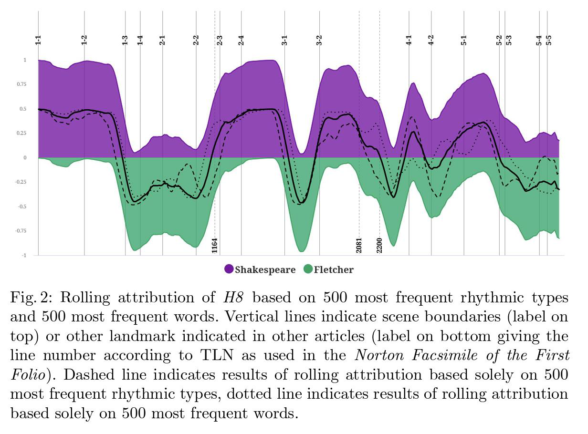
滾動歸屬：滑動一個窗口，逐段問：比較像誰？rolling attribution: slide a window through the play and ask, passage by passage, who it resembles
特徵：500 個最常見詞 ＋ 500 個最常見節奏型500 most frequent words and 500 most frequent rhythmic types
分類器是 SVM：本週的主角The classifier is an SVM, this week’s main character.
Petr Plecháč（捷克科學院，詩律學者 · Czech Academy of Sciences, verse scholar）, “Relative Contributions of Shakespeare and Fletcher in Henry VIII”, DSH 36.2 (2021)
Delta 也適用於中文嗎？Does Delta work for Chinese?
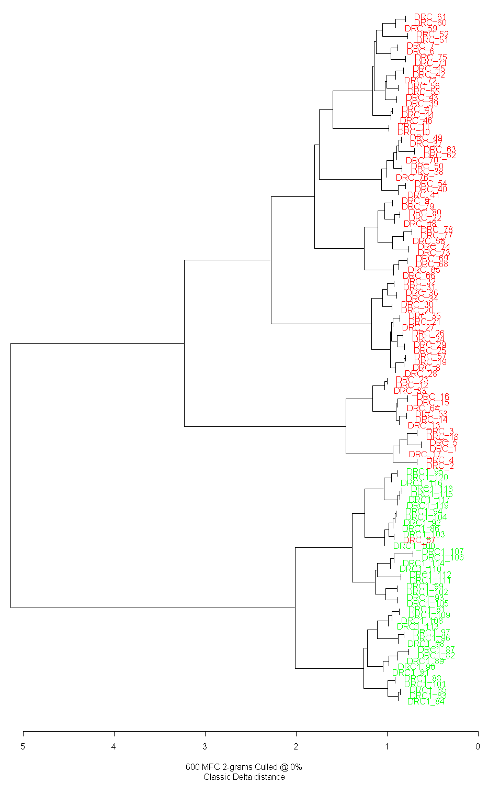
《紅樓夢》的 120 回； 600 個最常見的雙字； Classic Delta120 chapters; the 600 most frequent character bigrams
樹狀圖（層次聚類）： 越早合併 ＝ 越接近a dendrogram from hierarchical clustering: the earlier two branches join, the closer they are
最上層分成兩大群： 它們對應什麼？at the top it splits into two large groups. What could they be?
Du, “Testing Delta on Chinese Texts”
文體計量學在問什麼？What questions does stylometry ask?
作者歸屬attribution
這是誰寫的？Federalist Papers, Rowling
作者驗證verification
這是不是 X 寫的？one candidate against everyone else
作者側寫profiling
作者的性別、年齡、母語？gender, age, native language
年代chronology
什麼時候寫的？Lutosławski and Plato
合作寫作collaboration
誰寫了哪一段？Henry VIII, Hildegard
斷點偵測change detection
從哪裡開始換人？Hongloumeng: today’s paper
兩條路：無監督與有監督Two routes: unsupervised and supervised
無監督unsupervised
不給答案，只看誰跟誰接近no labels: who is close to whom?
距離 ＋ 聚類（樹狀圖）distances, clustering
主成分分析 PCA
網絡圖 bootstrap consensus networks
例：勃朗特 PCA、紅樓夢樹狀圖 · 上週的主題模型也是無監督
有監督supervised
用已知作者的文本訓練分類器train a classifier on texts of known authorship
Delta（最近鄰 nearest neighbour）
支持向量機 SVM
邏輯迴歸 logistic regression
樸素貝氏 naive Bayes (Mosteller & Wallace)
隨機森林、神經網路、BERT… random forests, neural networks
沒有「唯一正確」的方法：特徵 × 距離／分類器 × 驗證的組合There is no single right method: every study combines features, a distance or classifier, and a way of validating.
特徵集也有很多種Many kinds of feature sets
最常見詞 MFW／功能詞
經典做法（Burrows）
字元 n-gram character n-grams
不必分詞：對中文特別方便
詞性 n-gram POS n-grams
句法習慣
句長、詞長
Mendenhall；單獨使用效果較弱
標點、引語、感嘆
Hu 等（2014）
詞彙豐富度 vocabulary richness
type-token ratio、Yule’s K
節奏、格律 rhythm, metre
Plecháč（《亨利八世》）；詩的平仄？
語言模型嵌入 embeddings
最新，但比較難解釋
中文要先決定：字還是詞？繁體還是簡體？哪個版本？For Chinese, decide first: characters or words? Which script, which edition?
訓練、驗證、測試：就像準備考試Training, validation and test data: like preparing for an exam
📘
訓練集training set
＝ 有答案的練習題
模型從這裡學習：作者已知的文本the model learns from texts whose author we know
📝
驗證集validation set
＝ 模擬考
用來調整設定：例如要用幾個特徵？used to choose the settings, e.g. how many features
🎓
測試集test set
＝ 密封的期末考
最後只考一次：模型真正的程度opened once, at the very end: the model’s real level
過度擬合（overfitting）＝ 把練習題的答案背下來：練習題滿分，期末考不及格。特徵越多、文本越少，越容易發生Overfitting: memorizing the answers to the practice problems. Perfect in practice, fails the final. Many features and few texts make it likely.
所以：測試用的文本，在訓練時絕對不能看到So the test texts must never be seen during training.
交叉驗證：輪流當模擬考Cross-validation: everyone takes a turn as the mock exam
訓練 練習題驗證 模擬考測試 期末考
期末考（測試集）先鎖起來the test set is locked away first
文本不多時，只考一次模擬考太看運氣 → 分成 5 份，每份輪流當一次模擬考with few texts, one mock exam is luck; split the rest into 5 parts, each takes a turn
5 次成績取平均 → 比較可靠average the 5 scores: a fairer estimate
對照組：在答案已知的文本上試試看——同一位作者的書，不應該被分成兩個人controls: try the method where we know the answer; a single-author book should not split in two
今天的文本Today’s reading
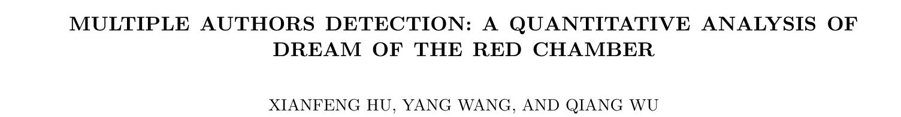
Xianfeng Hu, Yang Wang & Qiang Wu, Advances in Adaptive Data Analysis 6.4 (2014)
Hu 等人：這些研究都沒有檢查結果穩不穩定（沒有交叉驗證）→ 用機器學習重新做一次Hu et al.: none of them checked whether the result is stable (no cross-validation), so they redo it with machine learning.
核心想法：「時序斷點」The key idea: a chrono-divide
按照章回順序，讓分類器給每一回打一個分數 S(n)：大於 0 ＝ 像作者甲，小於 0 ＝ 像作者乙a classifier gives every chapter a score: above 0 looks like author A, below 0 like author B
只有一個作者：分數上下亂跳，沒有規律one author: the scores jump around with no pattern
在第 X 回換人：分數在 X 之後變號a new author from chapter X: the sign flips after X
找到這樣的分類器 → 支持「兩個作者」；找不到 → 否定。交錯合寫的書不適用Finding such a classifier supports two authors; failing to find one rejects it. Not for books where two authors alternate.
什麼是分類器？What is a classifier? Features in, a label out
分類器（classifier）：一台機器，輸入一篇文本，輸出一個類別a machine that takes a text and outputs a category
① 輸入：這一回的特徵（每個字的 z 分數）input: the features of one chapter
② 每條線上有一個權重 w：藍 ＝ 拉向前 80 回，紅 ＝ 拉向後 40 回，越粗越重要every wire has a weight; blue pulls towards the first 80, red towards the last 40
③ 機器只做一件事：特徵 × 權重，加起來；> 0 → 前 80 回，< 0 → 後 40 回all it does: multiply, add up, look at the sign · N next chapter
訓練 ＝ 用已知答案的章回，調整權重；之後幾週會再細談Training = adjusting the weights on chapters whose answer we know. More in later weeks.
哪一條線最好？Many lines separate the two authors. Which is best?
● 前 80 回的章回 ● 後 40 回的章回 N 換一條線 · 第 1 條
每一條都把訓練資料完全分開every one of them separates the training data perfectly
新的一回 ★ 來了： 不同的線，答案不一樣a new chapter ★ arrives, and the lines disagree about it
直覺：選離兩邊都最遠的線 → 最寬的「街道」Intuition: choose the line farthest from both groups, the widest street.
最寬的街道Maximizing the margin: the widest street
↑↓ 轉動 rotate · O 最佳 optimum
街寬 width：–／最寬 max –
碰到街邊的點 ＝ 支持向量（圈起來的）the points on the edges of the street are the support vectors (circled)
其他的點不影響答案the other points do not affect the answer at all
SVM ＝ 找最寬的街道，再沿著中線切開An SVM finds the widest street and splits the plane along its middle line. (Cortes & Vapnik 1995)
分類器其實是一個加權總分The classifier is a weighted sum: what are \(\mathbf{w}\) and \(x_1, x_2, \dots\)?
\(x_i\)：這一回的特徵值（論文：d ＝ 196 個）the features of one chapter
\(w_i\)：SVM 學到的權重；正 → 前 80 回，負 → 後 40 回learned weights; the sign says which side a word pulls towards
每個字「投票」：w × xeach word casts a vote
b：整體偏移；總分 > 0 → 前 80 回b shifts the threshold
\(|w_i|\) 越大，這個字越重要——論文就是用這一點來挑選特徵（SVM-RFE）The larger |wi|, the more the word matters; the paper uses this to select features.
SVM 的目標，用數學說一次Why the street is 2/‖w‖ wide, and what the SVM optimizes
中線 \(\mathbf{w}\cdot\mathbf{x} + b = 0\)；街邊 \(= \pm 1\)the edges are where the score reaches ±1
像斜坡：沿 \(\mathbf{w}\) 走 1 步，分數加 \(\|\mathbf{w}\|\)；從 0 到 1 只要走 \(1/\|\mathbf{w}\|\)a slope: one step along w raises the score by ‖w‖, so reaching 1 takes 1/‖w‖
兩邊加起來：街寬 ＝ \(2/\|\mathbf{w}\|\) ＝ 2 / 1.59 ≈ 1.26both sides together; 1.26 is the widest street from the previous slide
要最寬 ＝ \(\|\mathbf{w}\|\) 最小：\(\min\ \tfrac12\|\mathbf{w}\|^2\)the square and the ½ only make it easier to compute
條件：每回都在自己那邊的街外 \(y_i(\mathbf{w}\cdot\mathbf{x}_i + b) \ge 1\)y = +1 (first 80) or −1 (last 40)
\(\mathbf{w}\cdot\mathbf{x}+b\) 的正負 ＝ 論文圖中的「SVM 分數」positive: like the first 80 chapters; negative: like the last 40
另一種線性分類器：邏輯迴歸Another linear classifier: logistic regression
SVM（實線與街道）：只看支持向量；輸出的是距離uses only the support vectors; outputs a signed distance
邏輯迴歸（虛線）：每個點都有影響；輸出 0 到 1 之間的機率every point has a say; outputs a probability
背景顏色 ＝ 機率：越靠近線越不確定background shading: the probability, most uncertain near the line
兩條線很接近；實際上效果常常差不多—— 更重要的是特徵和驗證The lines are close, and in practice the two often perform alike; features and validation matter more.
權重告訴我們哪些字重要：SVM-RFEThe weights rank the features: recursive feature elimination
來自基因研究：從上千個基因中找出和癌症有關的幾個（Guyon 等 2002）Invented to find a few cancer-related genes among thousands; here: a few characters among 196 features.
論文的特徵：196 個The features: 196 per chapter
全書最常見的 500 個字500 most frequent characters
144
個功能字
最常見的 300 個詞300 most frequent words
48
個功能詞
句長的平均和變異、 直接引語、感嘆sentence length (mean, variance), direct speech, exclamations
4
每一回 ＝
196
維的向量
正規化：每個特徵除以中位數（不是 z 分數！）each feature divided by its median, so the median becomes 1: another normalization
樣本：一回一個；後 40 回每回「複製」成兩份，湊成 80 個one sample per chapter; each of the last 40 “duplicated” into two, to balance 80 against 80
實驗設計Experimental design
訓練：甲類 train A訓練：乙類 train B測試：從沒看過 test, never seen
實驗 4：其他三大名著（《三國演義》《水滸傳》《西遊記》）：頭尾各 25–30 回訓練，中間測試Experiment 4: the other three classic novels, trained on the first and last 25–30 chapters, tested on the middle
不穩定 → 重複一百次SVM-RFE is unstable, so repeat it a hundred times
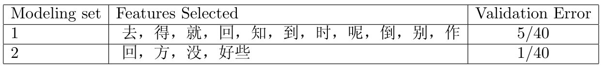
兩次隨機抽樣，選出的字幾乎完全不同，只有「回」重複two random training subsets: 11 vs. 4 features, only 回 in common
「偽聚合」：重複 100 次，數每個字被選中幾次pseudo-aggregation: 100 runs, count how often each feature is chosen
「相對頻率」：模型越小、越準，選票越重relative frequency: votes from small, accurate models count more
交叉驗證：10–50 個特徵就夠了cross-validation: 10 to 50 features are enough
N 跑一次 · A 自動 · R 重來 · 第 0 次 （示意）
結果：第 80 回的斷點Result: a chrono-divide at chapter 80
第 61–80 回：幾乎都 > 0chapters 61–80: almost all positive
第 81–90 回：全部 < 0chapters 81–90: all negative
斷點剛好落在第 80 回之後the break falls exactly after chapter 80; the model was never told where to look in 61–90
例外：第 67 回。庚辰本正好缺第 64、67 回，真偽本來就有爭議the exception, chapter 67, is missing from the Gengchen manuscript and long disputed
作者是跑完實驗之後才知道第 67 回有爭議的The authors learned about the chapter-67 controversy only after running the test.
redrawn after Hu, Wang & Wu 2014, Fig. 1(b); values read off the figure, approximate
對照組Controls: where the method should find nothing
實驗 2（前 80 回內部）：沒有斷點 ✓within the first 80 chapters: no divide
實驗 3（後 40 回內部）：沒有斷點， 但分數逐漸下滑within the last 40: no sharp divide, but a gradual drift
作者的解讀：續寫者先模仿曹雪芹，越寫越回到自己的風格？their reading: an imitator who slowly slipped back into his own style?
其他三部小說都找不到斷點 → 方法不會「到處都看到兩個作者」No divide in the other three novels: the method does not see two authors everywhere.
最重要的 8 個特徵的「相對頻率」relative frequencies of the top 8 features (Table 2): high = a consistent difference
和另一部續書比一比Comparing with another sequel: Qin Zichen’s Continued Dream
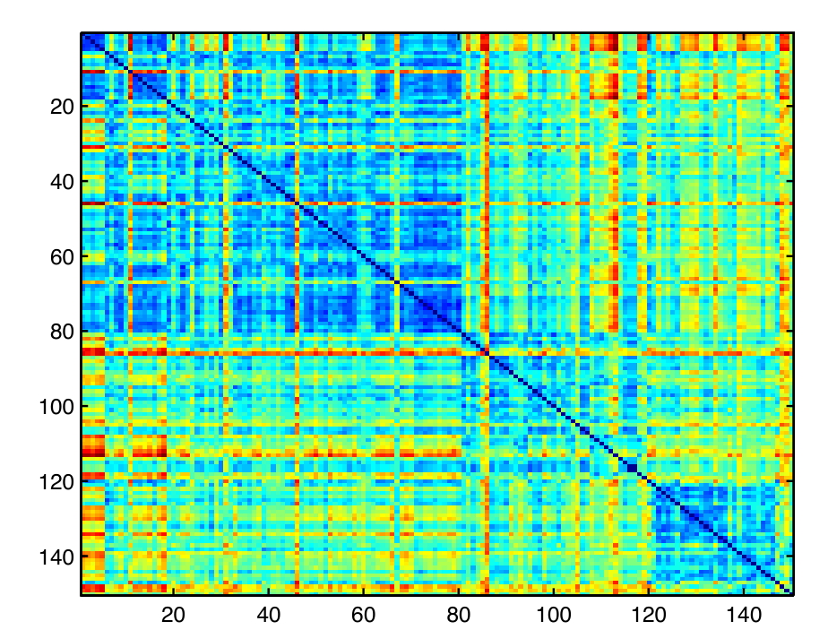
用實驗 1 選出的特徵，算每兩回之間的歐氏距離；藍 ＝ 近，紅 ＝ 遠Euclidean distances between chapters: 1–80, 81–120, then 30 chapters of the Continued Dream (121–150)
前 80 回彼此接近the first 80 chapters are close to each other
後 40 回自成一塊the last 40 form a block of their own
《續紅樓夢》離前 80 回更遠the sequel is even farther from the first 80
程高本的後 40 回，比別的續書更像曹雪芹——所以流傳最廣？The Cheng–Gao ending resembles Cao more than other sequels do. Is that why it won?
討論Discussion
1
後 40 回「複製」成兩份——同一回的兩份會不會一份在訓練、一份在驗證？If chapters are duplicated, can the same text land in both training and validation?
2
風格不同 ＝ 作者不同？還是編輯、抄寫、情節變悲、程高的修改？Does a different style mean a different author, or editing, copying, a darker plot, Cheng and Gao’s revisions?
3
表 1 是簡體字（时、没）：用的是哪個版本？版本會影響字頻嗎？Table 1 is in simplified characters: which edition? Does the edition change the frequencies?
4
《三國》《水滸》的分數比《西遊》高得多：這說明了什麼？Why are the scores for the Three Kingdoms and Water Margin much higher than for Journey to the West?
5
「即使不是無可辯駁，也極有說服力」：統計能證明作者是誰嗎？“Convincing if not irrefutable”: can statistics prove authorship?
課堂實作：qhchina 的 StylometryIn class: Stylometry from qhchina (Python) · qhchina.org/docs
from qhchina.analytics.stylometry import Stylometry
stylo = Stylometry(
n_features=100,用最常見的 100 個詞（MFW）
distance='cosine',距離的算法
mode='instance')和每篇文本比（預設：作者平均）
stylo.fit_transform(corpus)已知作者的文本 → 向量
stylo.predict_author(unknown_text)未知文本：最近的作者
stylo.dendrogram()樹狀圖
完整參數見文件 · see the docs for all parameters
回顧Recap
1
風格 ＝ 一組可以觀察的形式特徵（但作者訊號混著文類、主題……）style as an ensemble of observable formal features, mixed with other signals
2
文本 → 向量：功能詞、MFW、n-gram……texts become vectors of feature values
3
相對頻率去掉長度；z 分數讓每個詞同樣重要relative frequencies remove length; z-scores give every word an equal vote